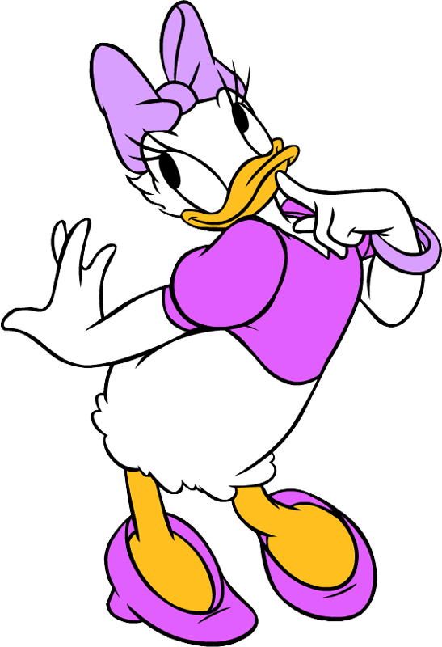

-
Happy Birthday

- I am daisy, I am a beautiful duck girl.
- But wait, where is Donald?
- Maybe he is in next page. press keydown to switch.
-
- I am Donald, I am a handsome duck guy.
- And I am the supervise of Daisy in Amazon
- Sometimes I am a Cruel Taskmaster, I often say "Back to work, boom." and Daisy will get +2 Attack.
-
生日快乐
前面两张图 纯属扯淡。。。
把个性域名作为生日礼物
是不是特别
Geek 有创意！！
-
最近你不是在学做网页么。所以我觉得 你应该有一个自己的独立域名了 嗯~
这个网站 域名服务用的godaddy, 后台托管在github上。
其实本来想用PERL写的。不过后来感觉没有必要 而且github不支持CGI. 还要单独买个后台服务器。所以就用最简单的HTML+CSS+JAVASCRIPT啦
特别金牛座，财迷不舍得买后台服务器
-
帐号密码
Domain Service: godaddy
Username: daisyyu1990
password: 0MG****uys(中间隐藏4位 你知道是什么的)
backend: github pages //www.github.com
Username: tk.seanzhang@gmail.com
password: 0MG****uys
-
End.